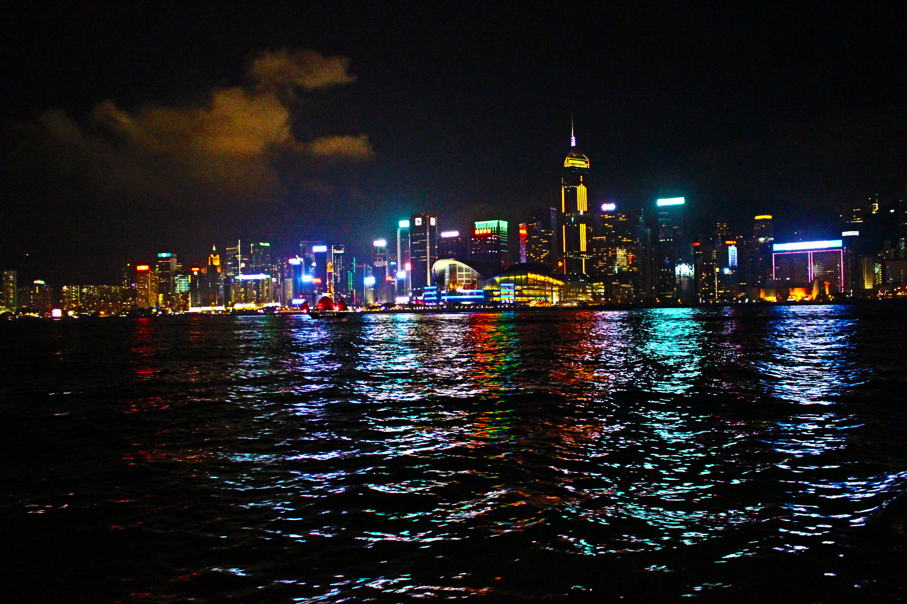
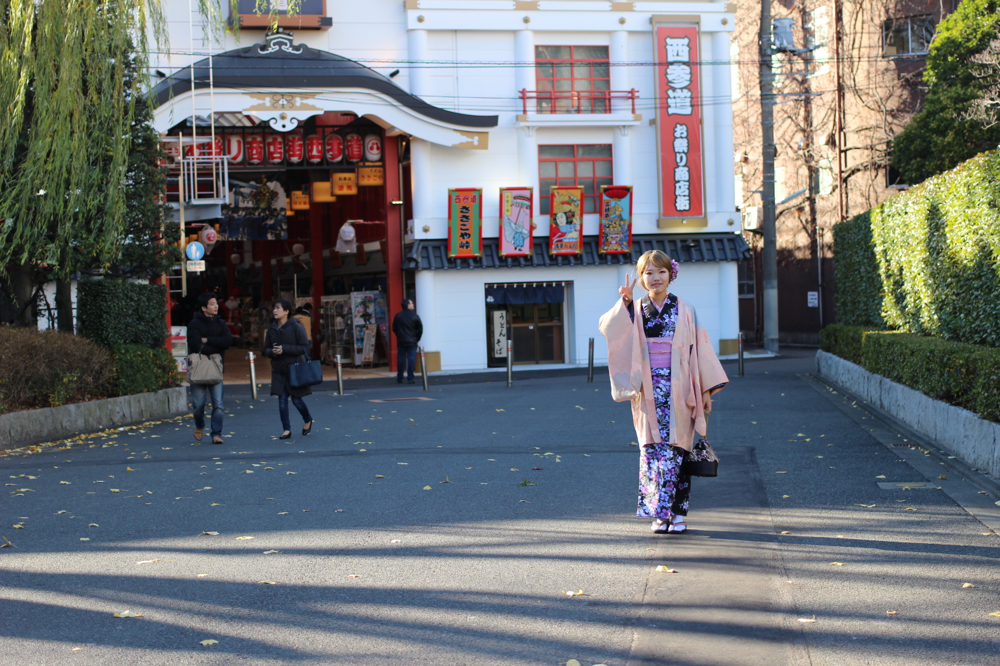

Travled with my mother. It's so excitied!
This is me and my mother! So wonderful.
HongKong in Sep 1, 2015

This is a photo taken from a ferry linking the Kowloon Peninsula and HongKong Island.
This is a dimsum that eaten the restaurant in Tsim Sha Tsui.
In so delicious, my friend and I went to this place twice.
Tokyo, Japan in 2014, 2013

I went to Japan in three times.
Japan and South Korea takes only two hours by air.
I had fun with my friend Kimono experience.
This is Tokyo DisneyLand.
I love Disney so much. Seriouslly!!